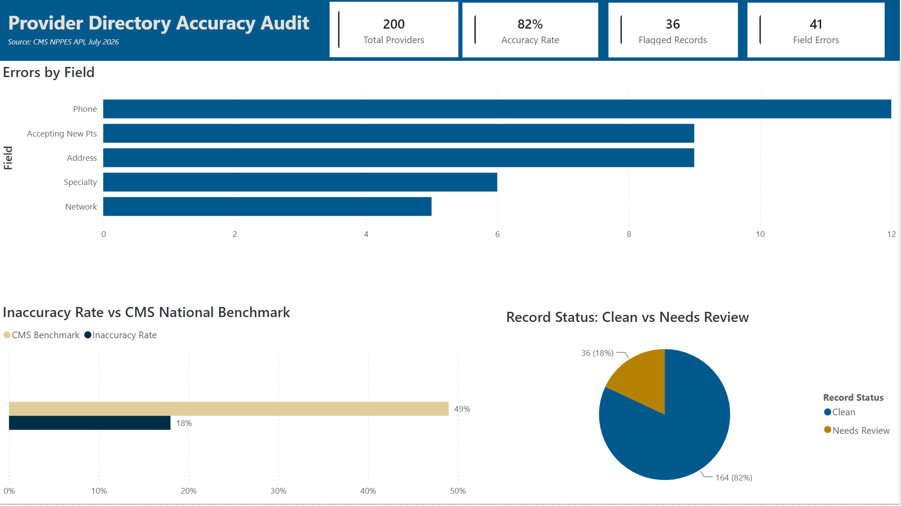
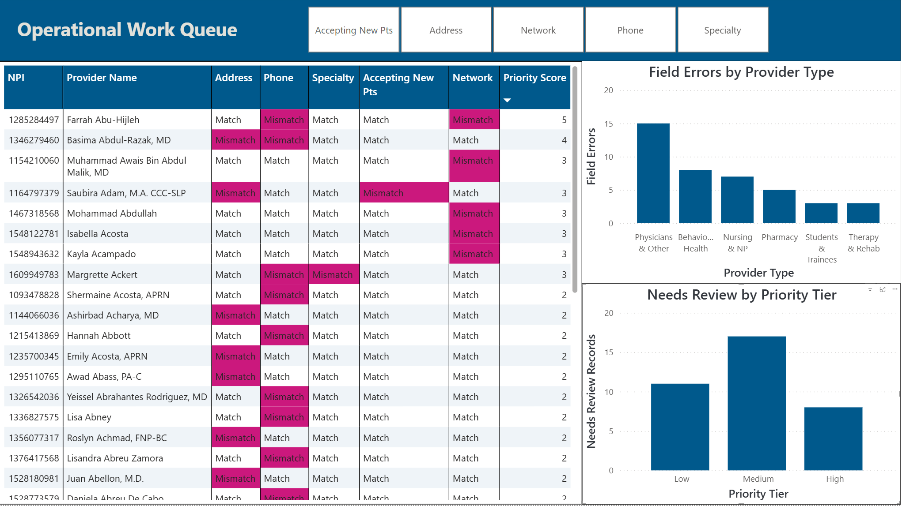

Payer Compliance Analytics · Personal Project
An Excel and Power BI project that reconciles real provider data from the CMS NPPES registry against a simulated member-facing directory to find and quantify data quality discrepancies. CMS national reviews have found that roughly half of directory locations contain at least one inaccuracy, and under the No Surprises Act plans must verify every record within 90 days and correct errors within two business days. This audit simulates exactly that process, then turns the findings into a risk-weighted operational work queue.
Audit Results
The Power BI Report
The report has two audiences. The executive summary answers "how accurate is our directory and how do we compare to the industry" with KPIs, an errors-by-field breakdown, and the inaccuracy rate charted against the CMS national benchmark. The work queue is built for the operations team that has to fix the records: every flagged provider, field-level mismatch highlighting, and a weighted risk score that puts the most dangerous listings on top.

Page 1 — Executive Summary: 82% record accuracy vs the ~51% CMS national benchmark, with phone errors the most common failure, matching CMS audit findings.

Page 2 — Operational Work Queue: 36 flagged records sorted by weighted risk score, field-level slicers, provider type breakdown, and priority tiers.
Methodology
Tools Used
| Tool | How It Was Applied |
|---|---|
| NPPES API | Source of truth for provider name, specialty, practice address, and phone across 200 Orlando-metro providers |
| Excel + XLOOKUP | Record matching on NPI between source and directory tables, field-by-field mismatch flags, conditional formatting, and a formula-driven audit summary |
| Power Query | Merged source and directory tables, engineered match-check columns, mismatch counts, priority scores, and provider type groupings |
| DAX | Accuracy rate, flagged record and field error measures, priority tier counts, and NSA exposure detection (false in-network listings) |
| Power BI | Two-page report with custom brand theme, KPI banner, CMS benchmark comparison, and a conditionally formatted work queue table |
| Git / GitHub | Full project version controlled: workbook, report file, documentation, and dashboard previews |
Key Learnings
The most valuable insight came from weighting the work queue. My first instinct was to rank errors by which field failed, but the better question was what each error costs. A wrong phone number blocks a member from reaching care. A false in-network listing is different: under the No Surprises Act, the plan must honor in-network cost sharing when a member relies on it, which makes it a financial and compliance liability, not just a data quality issue. Out of 200 records, 199 of the problems were operational noise. One was a legal exposure, and the scoring model puts it at the top of the queue.
The project also drove home why reconciliation logic needs verification against known truth. An early version of the Power BI merge double-counted one field and silently missed another, and the dashboard looked perfectly plausible while being wrong. Because the Excel audit provided verified expected numbers, the discrepancy surfaced immediately and traced back to a single miswired comparison column.